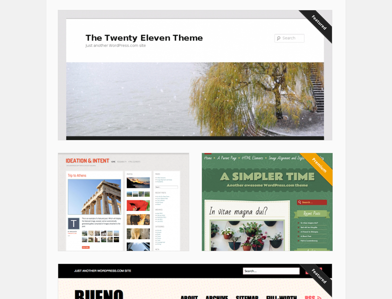
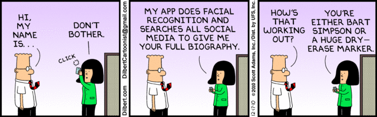

CMSES
Content Management Systems
Wordpress Themes
What is a Wordpress theme?

Wordpress Plugins
What is a plugin? wordpress.org/extend/plugins/
- Contact form 7
- WP PHP widget
- ALO EasyMail Newsletter
- Simple Nivo Slider
- Google Analytics for WordPress
Plugin showcase
WP tips
wp_syntax.php
Joomla
- Joomla was the result of a fork of Mambo on August 17, 2005.
- Project leader Andrew Eddie.
- Catered towards large member based websites.
Responsive design
A site coded with CSS3 media queries to adapt the layout to it's viewing environment. - wikipedia
Desktop -> Tablet -> Mobile
- set display:none on objects
- unload heavy scripts
- put menu into select list
- load lower quality images
- add swipe gestures to elements
- aeturnus.com.sg
User Agent (browser/device detection)
How a piece of software identifies itself
- What is my user agent?
- Use PHP or jQuery to detect user agent, then pass custom scripts || CSS.
- Emulation. Chrome and Safari.
Social Media on your website
